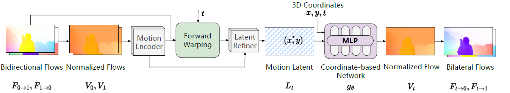
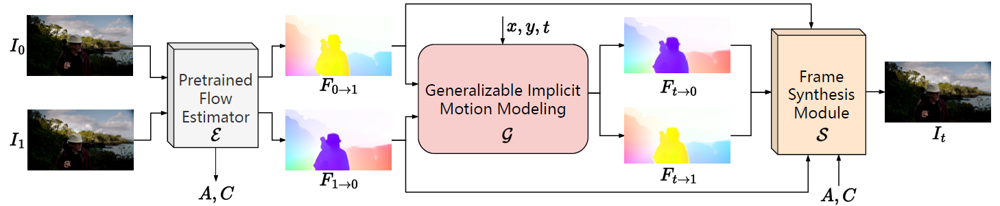
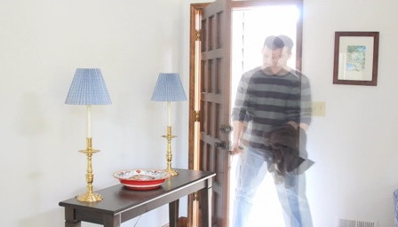

TL;DR: GIMM-VFI performs generalizable continuous motion modeling and interpolations between two adjacent video frames at arbitrary timesteps.
Abstract
Motion modeling is a critical component in flow-based Video Frame Interpolation (VFI).
Existing paradigms either simply consider linear combinations of bidirectional flows or directly predict bilateral flows with the condition of timestamps,
lacking the capability of effectively modeling spatiotemporal dynamics in real-world videos.
To address this limitation, in this study, we introduce Generalizable Implicit Motion Modeling (GIMM), a novel and effective approach to motion modeling for VFI.
Three key designs enable our GIMM as an effective motion modeling paradigm for VFI.
First, to obtain useful motion priors for bilateral flow estimations at given timestamps, we perform normalization over scales and directions for initial bidirectional flows.
Second, we design a motion encoding pipeline to extract spatiotemporal motion latent from bidirectional flows, effectively representing input-specific motion priors.
Third, we predict arbitrary-timestep optical flows within two adjacent input frames via an adaptive coordinate-based neural network implicitly, with spatiotemporal coordinates and motion latent as inputs.
Our GIMM can be smoothly integrated with existing flow-based VFI works without further modifications. We show that GIMM performs better than the current state of the art on the VFI benchmarks.
Code and models will be released to facilitate future research.
Video
Method

Generalizable Implicit Motion Modeling module (GIMM). Our GIMM first transforms initial bidirectional flows \(F_{t\rightarrow0},F_{t\rightarrow1}\) as normalized flows \(V_0, V_1\).
Motion Encoder then extracts motion features \(K_0, K_1\) from \(V_0, V_1\) independently.
\(K_0, K_1\) are then forward warped at a given timestep \(t\) using bidirectional flows to obtain the warped features \(K_{t\rightarrow0}, K_{t\rightarrow1}\).
We pass both the warped and initial motion features into Latnet Refiner that outputs motion latent \(L_t\), representing motion information at \(t\).
Conditioned on \(L_t(x,y)\), the coordinate-based network \(g_{\theta}\) predicts the corresponding normalized flow \(V_t\) with 3D coordinates \(\textbf{x}=(x,y,t)\).
For interpolation usage, \(V_t\) is then transferred into bilateral flows \(F_{t\rightarrow0},F_{t\rightarrow1}\) through unnormalization.

Integrating GIMM with Video Frame Interpolation (GIMM-VFI). GIMM-VFI utilizes a pre-trained flow estimator \(\mathcal{E}\),
to predict bidirectional flows \((F_{0\rightarrow1}, F_{1\rightarrow0})\) and extracts context features \(A\) as well as correlation features \(C\) from the input frames \((I_0, I_1)\).
Given the timestep \(t\), a generalizable implicit motion modeling (GIMM) module \(\mathcal{G}\)
(detailed in Figure \above) takes the bidirectional flows as inputs and predicts bilateral flows \((F_{t\rightarrow0}, F_{t\rightarrow1})\),
which are then passed into a fame synthesis module \(\mathcal{S}\), together with extracted features \((A, C)\), to synthesize the target frame \(I_t\).
More interpolations
We present input videos (up) and 8X interpolated results by GIMM-VFI (down).
Additional Results
Overlaid inputs

GIMM modeled motion
GIMM-VFI interpolated results
BibTeX
@article{guo2024gimmvfi,
author = {Guo, Zujin and Li, Wei and Loy, Chen Change},
title = {Generalizable Implicit Motion Modeling for Video Frame Interpolation},
journal = {arXiv preprint arXiv:},
year = {2024},
}